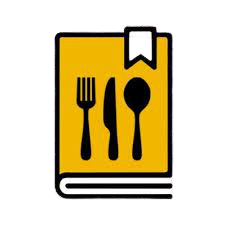

<ion-app >
  
  
  <ion-menu  *ngIf='isLogged' contentId="main">
    <ion-header>
      <ion-toolbar >
        <ion-title>
          <div style="height: 60px; width: 100px;">
            
            <ion-label style="margin-left: 55%;">{{this.controlador.getUsuario().usuario}}</ion-label>
          </div>
        </ion-title>
      </ion-toolbar>
    </ion-header>
    <ion-content>
      <ion-list>
        <ion-item value="recetas" routerLink = "/recetas">
          Recetas
        </ion-item>
        <ion-item value="semana" routerLink = "/semana">
          Semana
        </ion-item>
        <ion-item value="config" routerLink="/config">
          Configuración
        </ion-item>
      </ion-list>
    </ion-content>
    <ion-footer>
      
      <ion-button style="font-size: 10px; margin-top: -1%;" size="small" color="danger" (click)="logout()">Cerrar sesión</ion-button>
    </ion-footer>
  </ion-menu>
  <ion-content>
    <ion-router-outlet id="main"></ion-router-outlet>
  </ion-content>
</ion-app>
